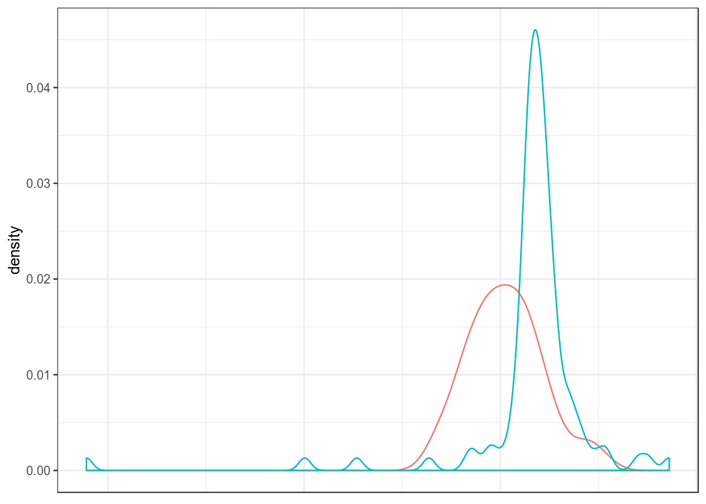
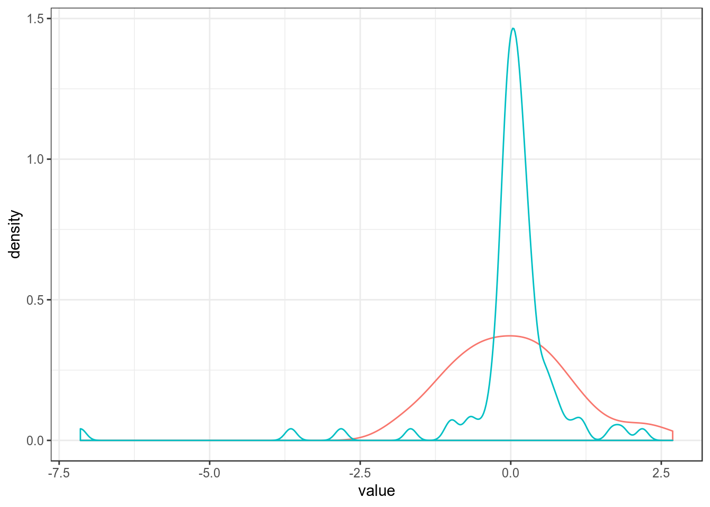
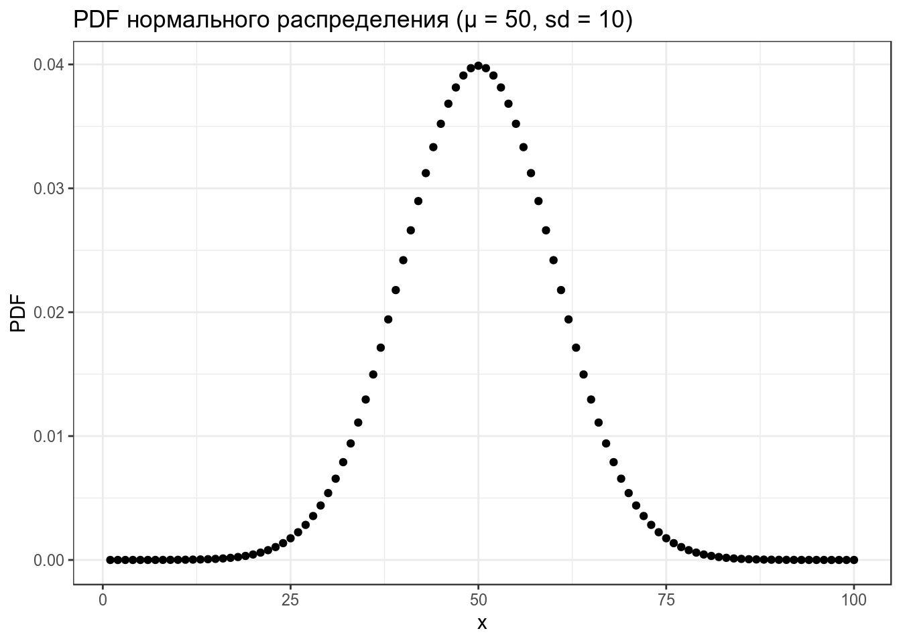
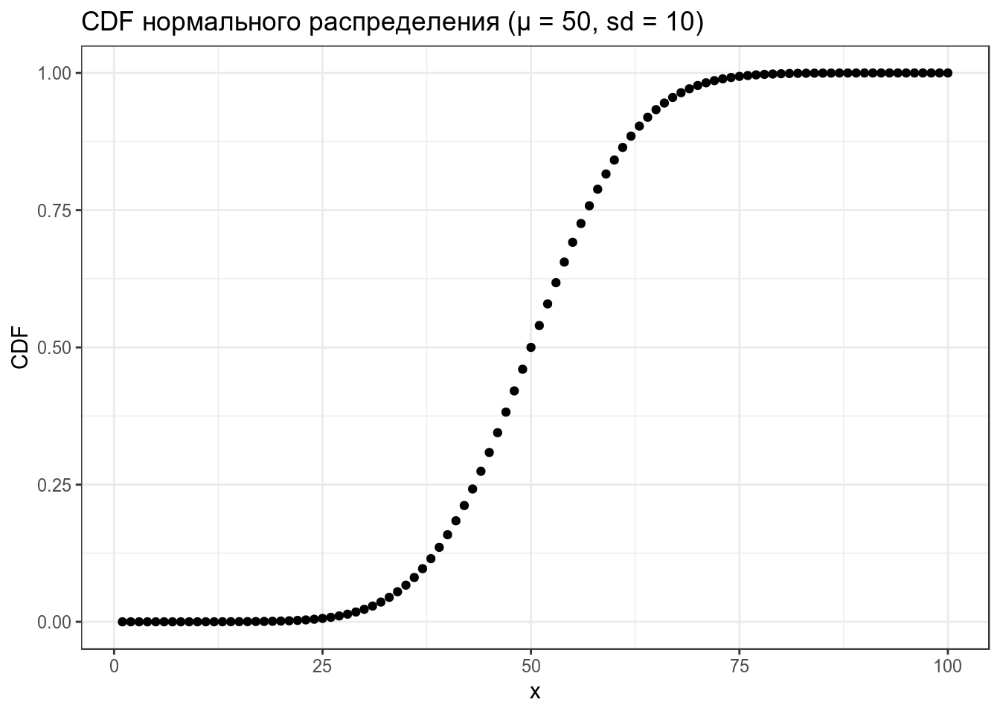
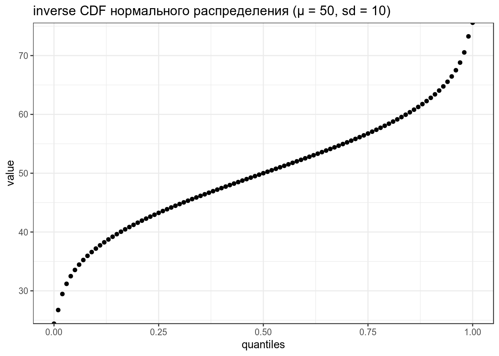
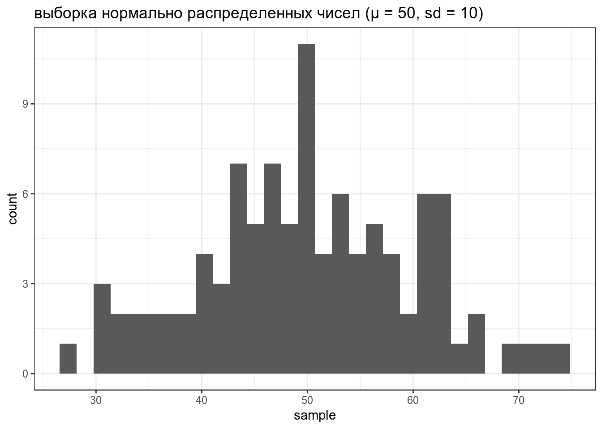

library(tidyverse)
theme_set(theme_bw())Бывает, имеет смысл перевести количественные данные в категориальные, т. е. составить группы, в которые будут попадать те или иные значения. Как обосновать те или иные границы — дело исследователя. Зная границы, легко узнать, сколько наблюдений в каждой из групп:
a <- sin(1:100) # создаем вектор со значениями
b <- c(-1, -0.5, 0, 0.5, 1) # создаем вектор с границами
table(cut(a, breaks = b))##
## (-1,-0.5] (-0.5,0] (0,0.5] (0.5,1]
## 35 15 16 34table(cut(a, breaks = b, right = F))##
## [-1,-0.5) [-0.5,0) [0,0.5) [0.5,1)
## 35 15 16 34mean(x) — среднее арифметическоеmean(x, trim = 0.05) — среднее усеченноеweighted.mean(x, w) — среднее взвешенное \[\frac{\sum_ix_i\times w_i}{\sum_i w_i},\ где\ x - это\ наблюдения,\ а\ w - это\ соответсвующий\ вес\]median(x) — медианаmin(x) — минимальное значенияmax(x) — максимальное значенияrange(x) — минимальное и максимальное значенияquantile(x, 0.23) — квантильIQR(x) — межквартильное расстояниеВсе функции описательных статистик болезненно относятся к наличию значений NA, поэтому следует использовать аргумент na.rm = TRUE, который позволяет игнорировать NA.
mean(c(1:100, NA))## [1] NAmean(c(1:100, NA), na.rm = TRUE)## [1] 50.5Представим, что у нас есть два распределения, которыми описывают примерно одно и то же, но измерения производились в разных единицах. Как привести все значения в одну систему координат?

Поместим средние обоих распределение в 0, а стандартное отклонение в 1:

\[scale(x) = \frac{mean(x) - x}{sd(x)}\]
scale(x) — z-преобразованиеStatistics are used much like a drunk uses a lamppost: for support, not illumination. A.E. Housman (commonly attributed to Andrew Lang) A frequentist uses impeccable logic to answer the wrong question, while a Bayesean answers the right question by making assumptions that nobody can fully believe in. P. G. Hammer
Мы попробуем разобраться с некоторой основой байесовской статистики.
В R встроено какое-то количество известных распределений. Все они представлены четырьмя функциями:
d... (функция плотности, probability density function),p... (функция распределения, cumulative distribution function) — интеграл площади под кривой от начала до указанной квантилиq... (обратная функции распределения, inverse cumulative distribution function) — значение p-той квантили распределенияr... (рандомные числа из заданного распределения).Рассмотрим все это на примере нормального распределения.
data_frame(x = 1:100,
PDF = dnorm(x = x, mean = 50, sd = 10)) %>%
ggplot(aes(x, PDF))+
geom_point()+
labs(title = "PDF нормального распределения (μ = 50, sd = 10)")
Какое количество данных лежит в промежутке от 0 до 30?
pnorm(30, mean = 50, sd = 10)## [1] 0.02275013data_frame(x = 1:100,
CDF = pnorm(x, mean = 50, sd = 10)) %>%
ggplot(aes(x, CDF))+
geom_point()+
labs(title = "CDF нормального распределения (μ = 50, sd = 10)")
Какое значение соответствует 40-ой квантили?
qnorm(0.4, mean = 50, sd = 10)## [1] 47.46653data_frame(quantiles = seq(0, 1, by = 0.01),
value = qnorm(quantiles, mean = 50, sd = 10)) %>%
ggplot(aes(quantiles, value))+
geom_point()+
labs(title = "inverse CDF нормального распределения (μ = 50, sd = 10)")
Siri, Алиса, Дорогой R, сгенерируй мне 100 наблюдений из нормального распределения со средним 50 и стандартным отклонением 10.
data_frame(sample = rnorm(100, mean = 50, sd = 10)) %>%
ggplot(aes(sample))+
geom_histogram()+
labs(title = "выборка нормально распределенных чисел (μ = 50, sd = 10)")## `stat_bin()` using `bins = 30`. Pick better value with `binwidth`.
Если не использовать set.seed(), то результат работы рандомизатора нельзя будет повторить.
Какое значение имеет 25% квантиль нормального распределения со средним в 20 и стандартным отклонением 90.
Посчитайте значение 97% квантили нормально распределенных данных.